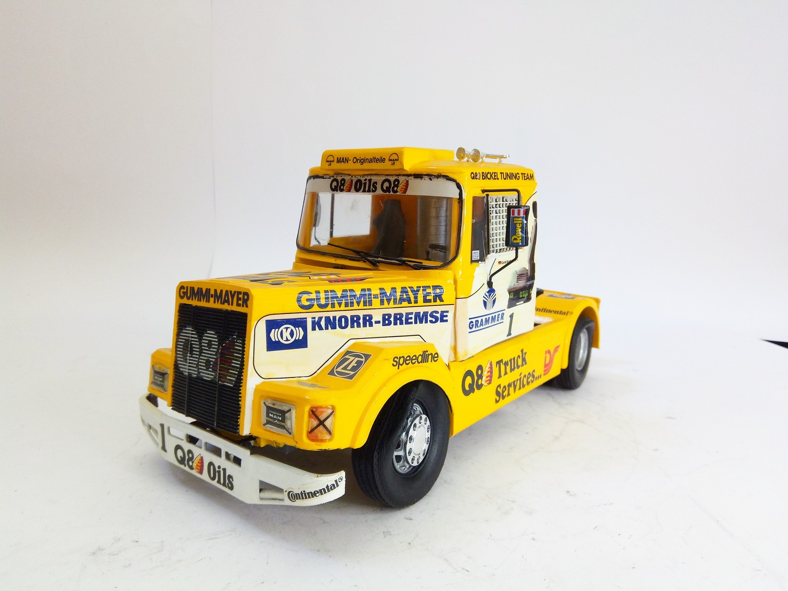
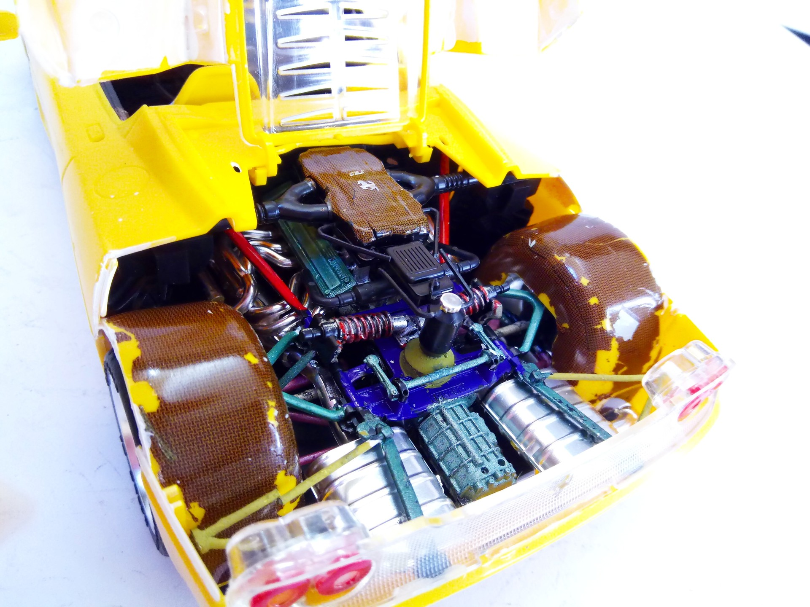
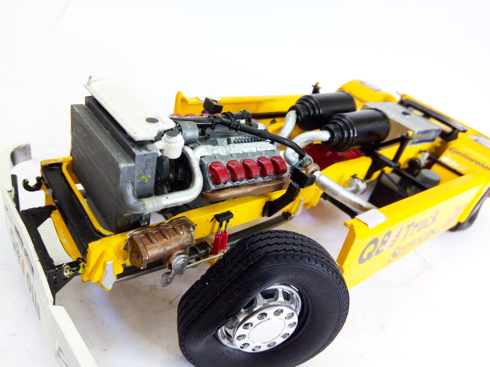
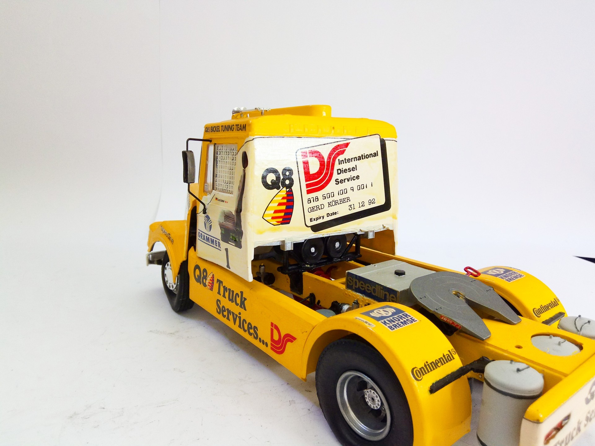

Auto e veicoli stradali · scale model archive
Phoenix MAN Racing Truck
Phoenix MAN Racing Truck — Kit: Revell, Scale: 1/24. Driver Gerd Körber Unfortunately the vinyl tires aged quite badly Model by Franco Donati #1/24 #Revell

Photo gallery



English description
Driver Gerd Körber
Unfortunately the vinyl tires aged quite badly
Model by Franco Donati
#1/24 #Revell
Descrizione italiana
Pilota: Gerd Körber.
Unfortunately il vinyl tires aged piuttosto badly.
Modello di Franco Donati.